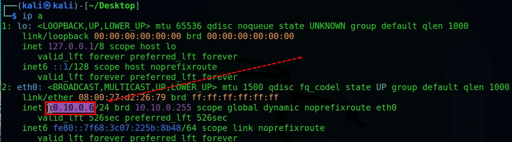

change kali password from kali to Administrator
> passwd
change root passwort( default root password is kali
> Sudo passwd root
update
> sudo apt update
upgrade
> sudo apt full-upgrade -y
remove librairies that are no longer needed
> sudo apt autoremove
Log in into
vm: metasploitable3
Pass: vagrant
> ping 8.8.8.8
> ip a
> sudo shutdown -h now
vm: meta2
pass: msfadmin
>
vm: kali-linux2024
Pass: Administrator
verifiy that we have an ip that is on
> ip a

do a scan to see what is on our network?
> sudo nmap -sn 10.10.0.6

perfom a complete scan of computers present on the network
> nmap -A 10.10.0.5-7

s
>